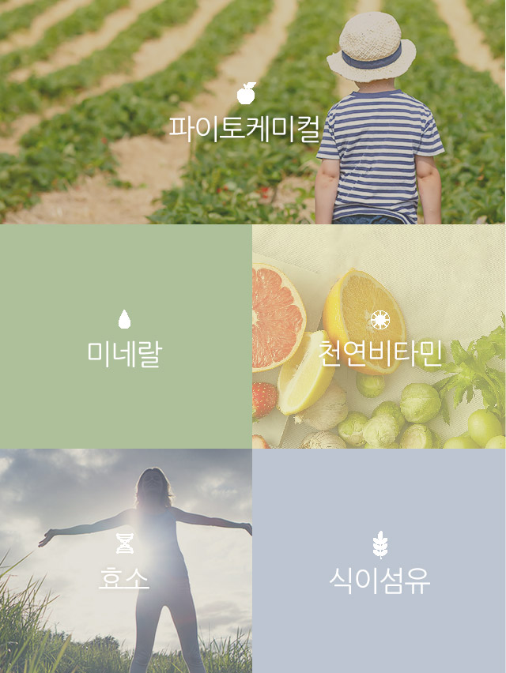
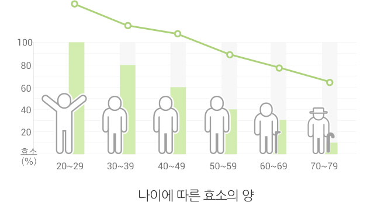

THE KEY TO GOOD HEALTH LIES IN NATURE
자연은 스스로 조화를 이루는 생명력과 질서를 가지고 있습니다.외부로부터 스스로를 방어하고 재생해 생태계를 유지시키기 때문에 자연을 위대하다고 합니다. 자연으로 부터의 먹거리를 먹어야 안심 할 수 있고, 영양도 가장 뛰어납니다.
01 자연을 거스르는 식습관으로 현대인은 아직도 고통받고 있습니다
과도한 스트레스, 운동 부족, 잘못된 식습관 등은 비만의 원인이 되고, 이는 각종 성인병을 유발합니다.
성인병의 가장 큰 원인은 잘못된 식습관으로, 자연의 먹거리에 현대인을 위한 진정한 해결 방법이 있습니다.
02 세계 유수의 기관들에서 채소, 과일의 우수성에 대한 연구결과가 발표되었습니다
채소 과일을 많이 먹을수록 사망률이 감소한다
건강해지려면 채소, 과일을 많이 먹어야 합니다. 채소 과일에는 비타민, 미네랄, 식이섬유 뿐만 아니라 파이토케미컬, 효소가 풍부합니다. 런던대 연구 결과, 하루 평균 7접시 이상 채소 과일을 먹을 경우 4명 중 1명 꼴로 걸리는 암의 발병을 확! 낮출 수 있습니다. 하지만 충분한 양의 채소 과일을 섭취하는 것은 쉽지 않습니다.
하루 평균 7접시 이상 채소 과일을 먹을 경우 4명 중 1명꼴로 걸리는 암의 발병을 낮출 수 있습니다. * Source: UCL Report
- 조기 사망률
- 42%감소
- 암에 따른 사망률
- 25%감소
- 심장병 사망률
- 31%감소
- 영국 옥스퍼드대학교
- 과일 150g을 매일 섭취하면, 심혈관계 질환 40% 감소!
- 미국 컬럼비아대학교
- 채소 과일의 비타민을 많이 섭취 하면,반대의 식습관을 가진 노인보다 치매 확률 감소!
03 전세계적으로 채소 과일 많이 먹기 캠페인이 진행되고 있습니다
이미 채소 과일 섭취의 중요성을 인식한 선진국에서는 국가적인 차원의 채소 과일 많이 먹기 대국민 캠페인을 진행하고 있습니다.
전 세계가 영양의 균형을 생각한 올바른 식습관을 통해서 건강하게 살기 위해 지속적으로 노력하고 있습니다.
- North Karēlia Project
- 핀란드는 국가적 ‘식생활 변화’를 위한 노스카렐리아 프로젝트를 1970년대부터 시작하여 끈질기게 추진한 결과, 심근경색으로 인한 사망률을 80% 이상 감소시켰습니다.
핀란드 중년 (35세~64세) 남성의 사망률 변화 추이 (단위 : 인구 10만 명당 사망자수) * National Institute of Health and Welfare (Finland)
- 2006
- 모든 사망원인 질환 1,328
- 심혈관 질환 680
- 관상동맥심장 질환 489
- 암 262
- 1969 ~ 1971
- 모든 사망원인 질환 583 (-56%)
- 심혈관 질환 172 (-79%)
- 관상동맥심장 질환 103 (-79%)
- 암 124 -53%)
- Republic of Korea 가족건강 365 하루에 3번, 6가지 이상 채소 과일을 5색으로 맞춰 먹자
- USA Strive for 5 cups 과일 150g을 매일 섭취하면, 심혈관계 질환 40%감소!
- Canada Fruits and Vegitables - Mix it up! 언제, 어디서든 매 끼니와 간식을 채소 과일과 함께
- Australia 2 - 5 servings of fruits and vegetables a day 300g의 과일과 375g의 채소 매일 섭취 권장
04 채소 . 과일은 왜 우리를 건강하게 할까요?
채소 과일에는 건강에 도움이 되는 천연 비타민, 미네랄, 식이섬유, 파이토케미컬, 효소가 풍부합니다.

05 채소 . 과일에 풍부한 영양소, 파이토케미컬
채소 . 과일파이토케미컬은 오직 채소 과일에만 있는 식물 영양소 입니다. 몸 속의 백혈구 처럼, 식물이 해충, 미생물 등 외부의 공격으로 부터 스스로를 보호하기 위한 방어 물질입니다. 파이토케이컬은 강력한 항산화 효과로 면역력 증진, 노화방지, 피부 미용 등 다양한 효능이 있는 영양소입니다.
파이토케미컬은 컬러별 채소 과일에 따라 각기 다른 영양소와 그 효능을 가지고 있습니다. 따라서 균형있는 영양소 섭취를 위해 컬러별 채소 과일을 가열 조리하지 않고 골고루 섭취해야 건강에 도움이 됩니다.
- YELLOW 베타카로틴 [오렌지] 피부건강, 면역증진
- PURPLE 안토시아닌 [포도] 심혈관계질환 개선, 기억력 증진
- WHITE 쿼세틴 [양배추] 혈압저하, 간보호 효과
- RED 라이코펜 [토마토] 항암효과, 혈관기능강화
- GREEN 루테인 [케일] 눈 건강, 항염증 효과
잠깐! 혹시 비타민을 먹고 계시나요?
바쁜 일상 속에서 사람들은 채소 과일 대신 쉽고 빠른 효과를 기대하며 비타민 보충제 등 인공적인 영양제를 섭취합니다. 하지만, “세계적인 비타민 열풍 속에서 비타민 보충제가 오히려 사망률을 높일 수 있다” 라는 논문이 발표되는 등 지금 여러분이 먹고 있는 비타민에 대한 논란은 끊이지 않고 있습니다.
- Conclusions
- Treatment width beta carotene, vitamin A. and vitamin E may increase mortality.
* AMA, American Medical Association 2007
06 우리가 몰랐던 효소의 특징
효소는 우리 몸에서 일어나는 거의 모든 반응을 도와주는 우리 생명에 꼭 필요한 영양소입니다. 효소는 우리가 먹은 음식을 소화시켜 이로운 에너지로 바꿔주고, 불필요한 노폐물을 배출시키며, 면역력을 높여줍니다. 심지어 말을 하고, 생각하고, 숨을 쉬는 데에도 효소의 도움이 필요합니다.
1. 효소는 생명유지에 꼭 필요한 필수에너지 입니다.
효소는 몸에 꼭 필요한 에너지로, 체내 효소가 부족한 사람은 몸 안의 불필요한 것들이 분해되지 않고 에너지가 생성되지 않기 때문에 쉽게 지치게 됩니다. 이와 반대로 효소가 충분한 사람은 섭취한 음식을 원활하게 에너지로 만들어 항상 활기찬 생활을 할 수 있습니다.
2. 나이가 들면서 줄어드는 효소, 음식을 통해 보충해야 합니다.
몸 속 효소의 양은 나이가 들수록 점점 감소하고 스스로 생성되지 않습니다. 따라서 효소는 음식을 통해 보충해야하고, 효소를 보충할 수 있는 가장 쉬운 방법은 채소, 과일을 먹는 것 입니다.

3. 효소는 가공하지 않은 채소 과일에 가장 많습니다.
효소는 열에 약해 40℃ 이상에서는 효소가 감소합니다. 가열한 콩과 생 콩을 발아시켰을 때, 가열한 콩은 싹이 나지 않지만, 생 콩은 효소가 있어 생명이 유지 되기 때문에 싹이 납니다. 이처럼 열이 가해지면 효소가 감소하기 때문에 조리된 음식이 아닌 가공하지 않은 채소 과일을 통해서만 살아있는 효소를 섭취 할 수 있습니다.
- 효소가 파괴된 가열한 콩
- 효소가 파괴 되기 때문에 가열된 콩은 발아하지 않습니다.
- 효소가 살아있는 생 콩
- 생 콩은 효소가 살아있기 때문에 발아 하였습니다.
07 식이섬유의 진실과 오해
식이섬유는 우리가 섭취하는 채소, 과일이나 곡류의 세포벽 성분을 지칭하는 용어로 완전히 소화되지 않는 부분을 말합니다. 식이섬유는 에너지나 칼로리는 없지만, 내장기관을 거치면서 대장을 청소하는 기능이 탁월합니다.
1. 주스는 식이섬유를 섭취하기 위해 먹는 것이 아니라, 파이토케미컬, 비타민, 미네랄 등의 영양소를 섭취하기 위해 먹는 것입니다.
식이섬유를 섭취할 수 있는 주요 식품은 채소, 과일, 곡류입니다. 그 중에서 채소, 과일 보다는 식이섬유가 많이 들어 있는 한끼 식사의 곡류를 먹는 것이 효과적입니다.
- 각 식품 유형의 식이섬유 함유량
- 보리 9.2g
- 검정콩 17.1g
- 두부 17.1g
- 풋고추 7.76g
- 김 31.3g
- 오이 1.5g
- 애호박 0.86g
- 오렌지 1.9g
- 토마토 0.17g
- 양배추 2.2g
믹서나 블렌더로 만든 채소, 과일 스무디 한 잔으로는 1~ 3g 식이섬유를 섭취 할 수 있지만, 잡곡밥 한 공기로 섭취할 수 있는 식이섬유는 15g 이상입니다. 즉, 식이섬유를 섭취하는 가장 쉽고 효과적인 방법은 스무디 보다는 한끼 잡곡밥입니다.
잡곡밥 식이섬유 15g > 스무디 식이섬유 한잔당 1g
2. 갈아 만든 주스의 수용성 식이섬유는 오히려 영양소 흡수에 방해가 됩니다.
믹서 또는 블렌더로 갈아 만든 주스에 들어있는 수용성 식이섬유는 우리 몸에 좋은 식물 영양소인 베타카로틴, 라이이코펜, 루테인, 토코페롤의 흡수를 감소시킵니다. 또한 체내 효소가 부족하면 식이 섬유를 제대로 소화시키지 못해 음식물 찌꺼기로 남게 되는데 이럴 경우 식이섬유가 제대로 된 기능을 할 수 없습니다. 또한 체내 효소가 부족하면 식이 섬유를 제대로 소화시키지 못해 음식물 찌꺼기로 남게 되는데 이럴 경우 식이섬유가 제대로 된 기능을 할 수 없습니다.